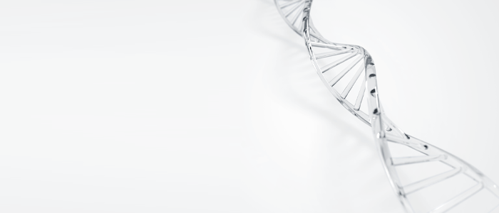
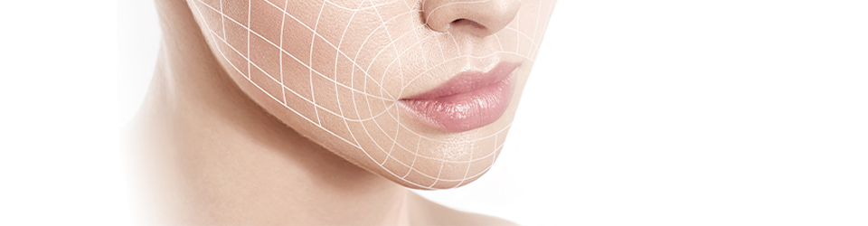
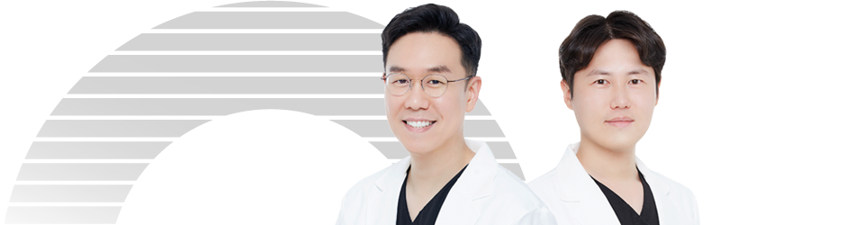
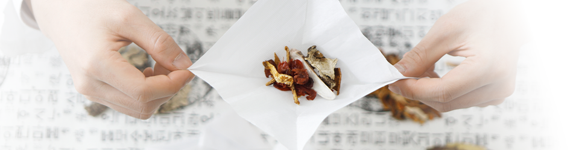
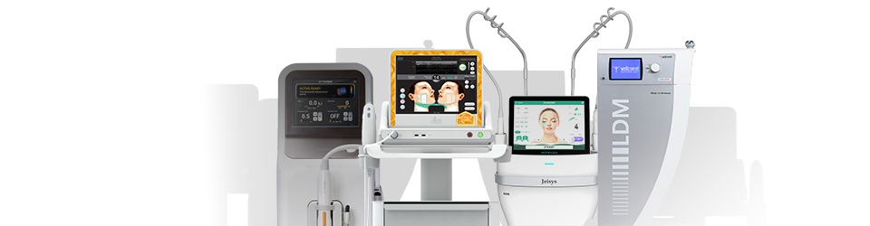
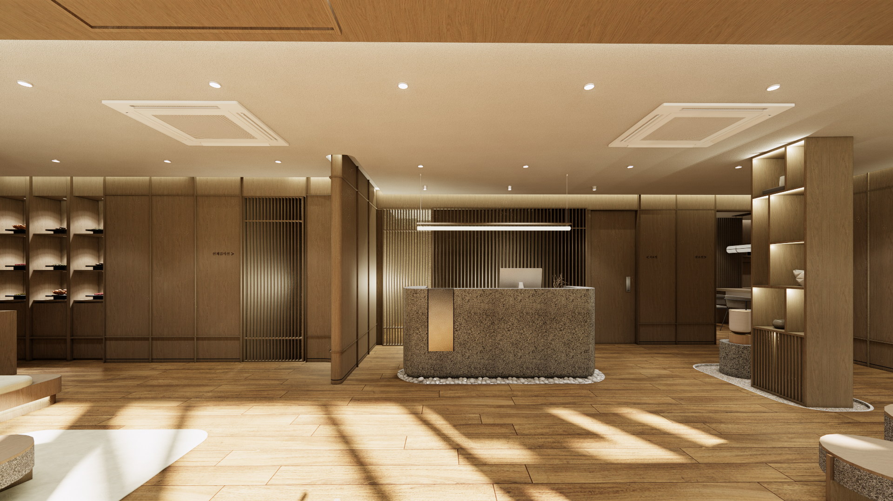

PN 리빌더
프리미엄 약침 솔루션: 피부 컨디션에 맞춘 맞춤형 재생
PN 리빌더 (PN Rebuilder) 피부 재생의 핵심 요소인 PN(폴리뉴클레오타이드) 와 특수 한약재가 결합된 맞춤형 약침으로, 각자의 피부 상태에 맞춰 최적의 효과를 제공합니다. 거의 붓지 않음
‘연어주사’에서 한 차원 높아진
천연 한방 스킨부스터 PDRN-PL
빠르게 복구되는 손상 피부 PDRN물질에 더한 화분, 락토페린의 시너지로 세포 재생 효과가 증대되어 보다 신속한 피부 재생이 가능합니다.
피부관리에 더한 건강 케어 식물의 생식세포 '화분'이 함유되어 피부, 관절, 모낭 재생 효과뿐 아니라 뛰어난 항염증 효과까지 체감할 수 있습니다.
관절염증과 여드름, 지루성 피부염, 안건염 등 염증성 질환에도 개선 효과를 보입니다.
한의학 특허 표적 리포좀 균질화 공법 모공보다 작은 크기의 나노 리포좀 속에 유효 성분을 가두는 표적 리포좀 균질화(UPH-24) 공법을 적용했습니다.
이 공법을 통해 약물이 시술 시 통증 없이 부드럽게 주입되며, 유효 성분의 효과가 빠르게 나타납니다.


내게 필요한 천연 한약재를 더한
형인재한의원의 프리미엄 PN 리빌더
PN 리빌더 R oyal 안색 개선 과 생기를 주는 성분 조합으로, 낯빛이 어둡고 칙칙한 분 께 추천합니다.
사향 신경가소성 효과로 세포 재생을 돕고, 생기를 불어넣어 피부에 활력을 더해줍니다.
PN 리빌더 T rouble 항염 작용 에 특화된 성분 조합으로, 홍조 및 트러블 케어 가 필요한 분께 추천합니다.
진센(Rg3 진세노사이드) 피부 보호와 콜라겐 재생을 도와주며, 염증성 트러블을 완화하는 데 탁월한 성분입니다.
PN 리빌더 H ealer 피부재생강화 에 특화된 성분 조합으로, 노화 및 처진 피부 가 신경쓰이는 분께 추천합니다.
황기 강력한 항산화 효과로 세포의 노화를 방지하고, 피부 구조를 건강하게 유지해줍니다.
자하거 단백질과 아미노산을 공급하여 피부 탄력과 주름 개선에 도움을 줍니다.

PN 리빌더 추천 대상
시작된 피부 노화가 신경쓰이는 분
잔주름이 눈에 띄기 시작하거나 피부 탄력이 감소한 경우, PN 리빌더로 콜라겐 생성을 촉진해 주름을 개선하고 탄력을 더합니다.
피부가 윤기 없이 손상되신 분 메이크업, 자외선, 환경 오염, 스트레스 등으로 인해 푸석푸석해진 피부에 세포 재생을 촉진, 건강하고 매끄러운 피부를 되찾을 수 있습니다.
탁한 피부톤과 피부결이 걱정이신 분 피부톤이 고르지 않거나 결이 거친 경우, PN 리빌더는 새로운 세포와 콜라겐을 생성해 피부톤을 균일하게 하고 결을 개선해 부드러운 피부를 만들어줍니다.
수분이 부족한 건성 피부이신 분 거칠고 건조한 피부에 수분을 공급하고 보습을 유지해, 촉촉한 피부로 가꿔줍니다.
전반적인 피부 개선을 원하는 분 피부 개선의 가장 기본은 피부 세포 재생 촉진입니다.
레이저나 성형 시술 후 빠른 피부 재생과 회복을 위해 PN 리빌더가 도움을 줄 수 있습니다.


가장 건강한 아름다움을 드 릴
형인재한의원의 약속
1:1 피부 컨디션&디자인 상담 원장님과의 충분한 상담을 통해 개인의 고민 부위와 피부 컨디션, 피부 특성을 꼼꼼히 체크합니다.
고객님이 추구하는 아름다움과 얼굴 상태를 모두 고려하여 가장 알맞는 퍼스널 페이스 디자인을 제안해드립니다.
한의원장 2인의 특별한 전담관리 상담부터 시술까지 내 가족, 지인의 피부라 생각하며 누구보다 꼼꼼하고 섬세하게 관리합니다.
피부 미용에 한의학적 시선을 접목, 혈맥과 근육 자극을 더하여 건강과 아름다움 두 가지 목표를 달성합니다.
부작용 없는 건강한 아름다움 고객님의 피부 건강과 만족도를 가장 중요하게 여깁니다.
시술 후의 마음 아픈 부작용이 없도록 검사와 상담 단계에 만전을 기하며, 약침과 한약의 재료는 천연 한약재로만 고집합니다.
정품 프리미엄 기기와 정량 시술 형인재한의원이 고객님께 사용하는 모든 기기와 약품은 정품으로, 내 얼굴에 더하지도 덜하지도 않은 맞춤 정량으로만 시술합니다.



상담 및 문의
가장 건강한 아름다움을 드릴
메디컬블룸한의원의 약속
1:1 피부 컨디션 & 디자인 상담
원장님과의 충분한 상담을 통해 개인의 고민 부위와 피부 컨디션, 피부 특성을 꼼꼼히 체크합니다. 고객님이 추구하는 아름다움과 얼굴 상태를 모두 고려하여 가장 알맞는 퍼스널 페이스 디자인을 제안해드립니다.
한의원장 2인의
특별한 전담관리
상담부터 시술까지 내 가족, 지인의 피부라 생각하며 누구보다 꼼꼼하고 섬세하게 관리합니다. 피부 미용에 한의학적 시선을 접목, 혈맥과 근육 자극을 더하여건강과 아름다움 모두를 달성합니다.
부작용 없는 건강한 아름다움
고객님의 피부 건강과 만족도를 가장 중요하게 여깁니다. 시술 후의 마음 아픈 부작용이 없도록 검사와 상담 단계에 만전을 기하며 약침과 한약의 재료는 우리 몸에 순한 천연 한약재만을 고집합니다.
정품 프리미엄 기기와
정량 시술
메디컬블룸이 고객님께 사용하는 모든 기기와 약품은 정품으로, 내 얼굴에 더하지도 덜하지도 않은 맞춤 정량으로만 시술합니다.